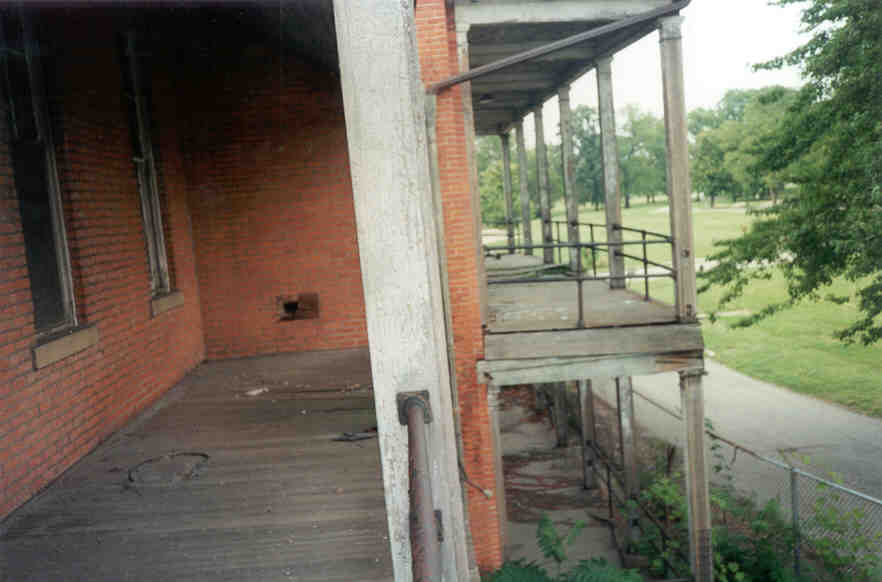

Company C Quarters
The big mansion-looking thing with the balconies at Fort Hayes was at one time the Quarters for Company C. Today it's a sagging abandoned building that would look more at home in a Louisiana swamp than a military base. Here's what it looked like in 1900:
Entrance can be gained through the big open doorway in the rear of the building. From the main hallway there are two big staircases which lead up in either direction. The bottom two floors consists of lots of rooms which might have been offices or dormitories.
At the end of each floor is a bigger room with sliding chalkboards built into the wall. There are signs that people hang out here sometimes--chairs, empty bottles, things like that. In the south room on the first floor we found a map of the world with some kind of battle plan drawn out in marker, but it didn't seem to be anything from history--Cuba attacking England, Australians in South America. Maybe it was one of those covert ops we hear about sometimes.
From the second floor you can walk out onto the balconies. Even when they're sagging and missing boards it's a nice view. Must have been nice to be stationed here.

From here you can take another set of stairs up to the abbreviated third floor. There are three offices on each side of the room--the kind that were built later on, with lower ceilings than the main room. Off of this main room are a few smaller ones, and through these you can access the slanted crawlspace beneath the roof. There's not much in the rooms above the rafters.
Back